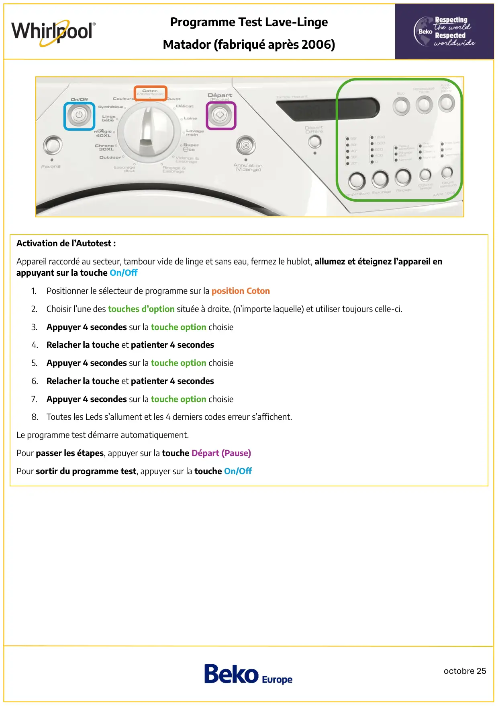
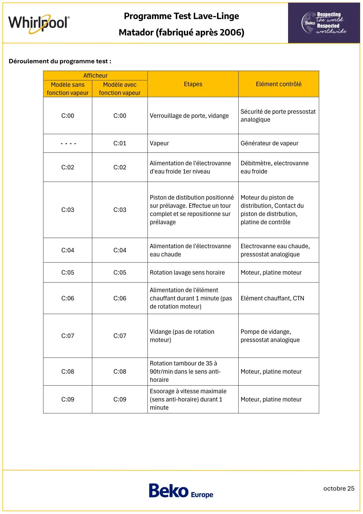
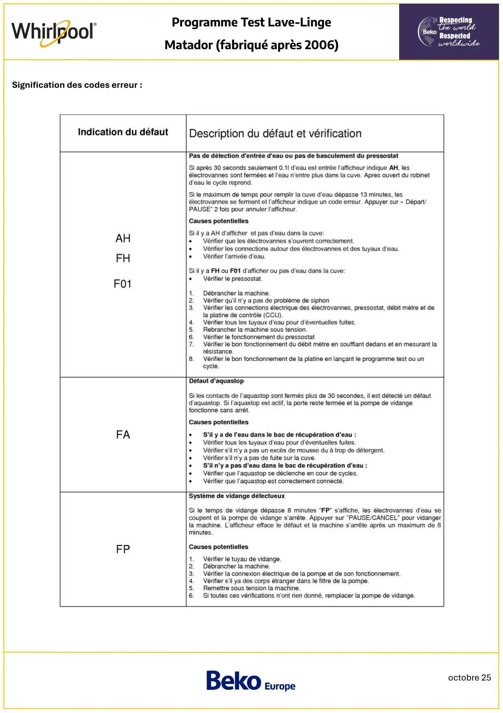
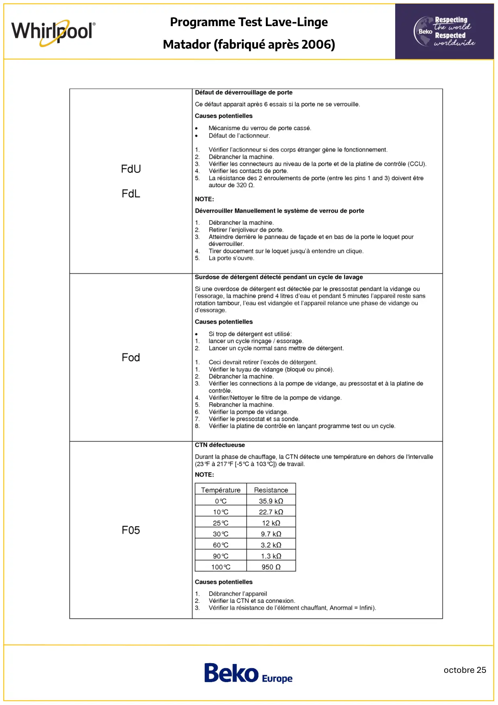
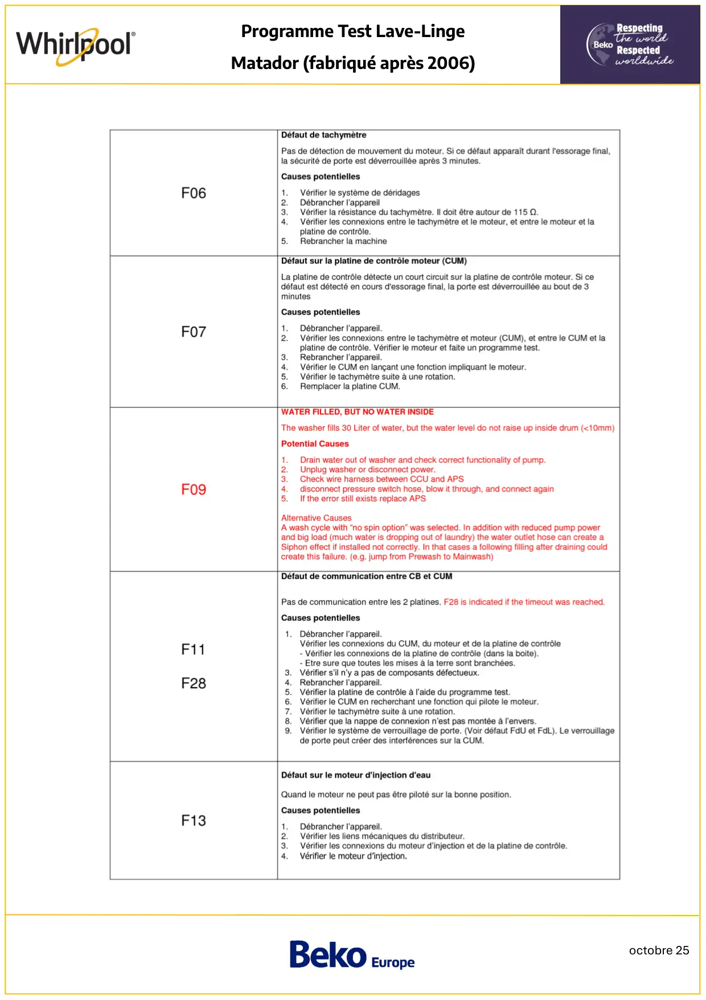
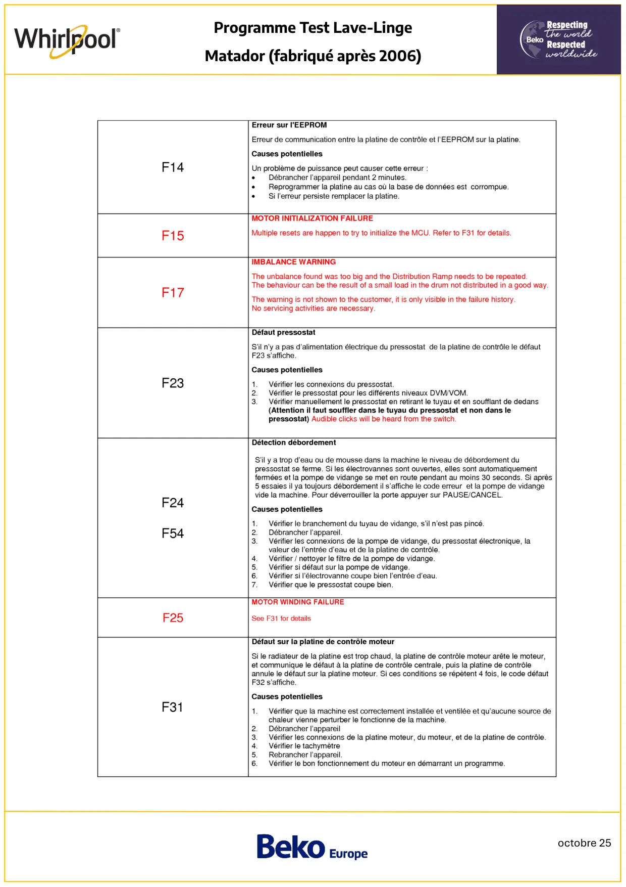
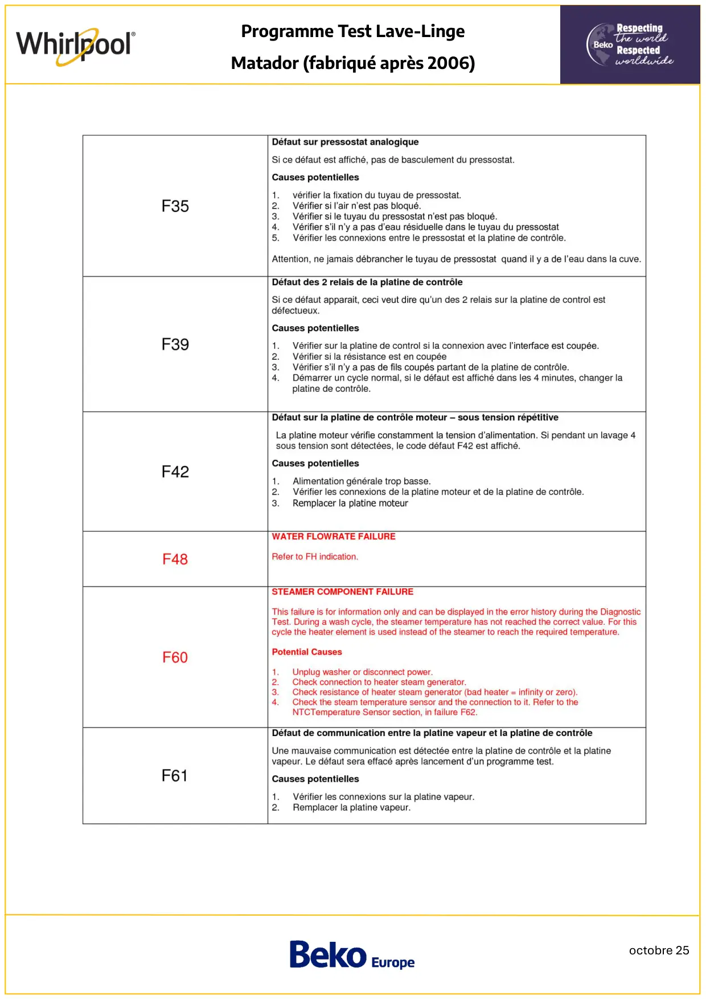
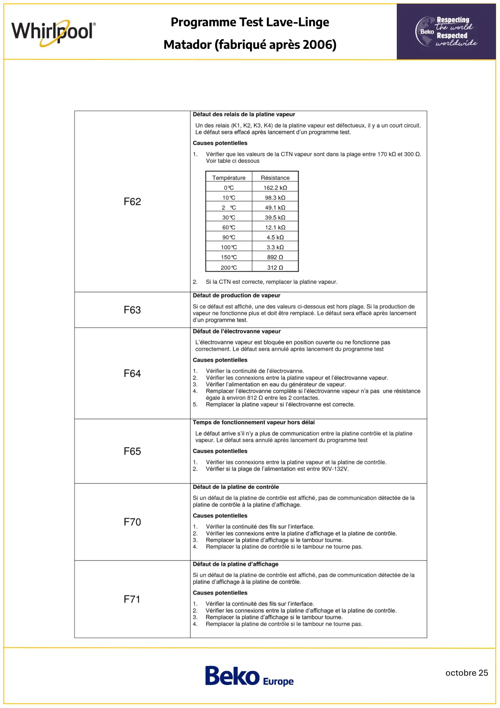
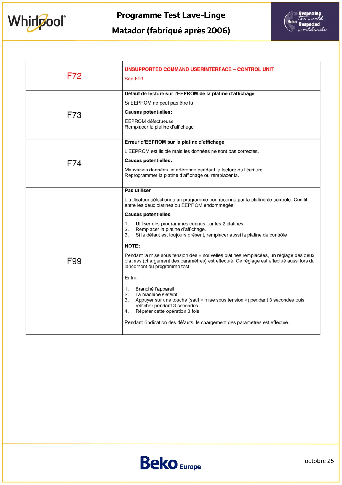

Prog Test lave linge Whirlpool Matador Fabriqué après 2006

octobre 25Programme Test Lave-LingeMatador (fabriqué après 2006)Activation de l’Autotest :Appareil raccordé au secteur, tambour vide de linge et sans eau, fermez le hublot, allumez et éteignez l’appareil enappuyant sur la touche On/Off1.Positionner le sélecteur de programme sur la position Coton2.Choisir l’une des touches d’option située à droite, (n’importe laquelle) et utiliser toujours celle-ci.3. Appuyer 4 secondes sur la touche option choisie4. Relacher la touche et patienter 4 secondes5. Appuyer 4 secondes sur la touche option choisie6. Relacher la touche et patienter 4 secondes7.Appuyer 4 secondes sur la touche option choisie8. Toutes les Leds s’allument et les 4 derniers codes erreur s’affichent.Le programme test démarre automatiquement.Pour passer les étapes, appuyer sur la touche Départ (Pause)Pour sortir du programme test, appuyer sur la touche On/Off
1 / 9
octobre 25Programme Test Lave-LingeMatador (fabriqué après 2006)Déroulement du programme test :AfficheurEtapesElément contrôléModèle sansfonction vapeurModèle avecfonction vapeurC:00C:00Verrouillage de porte, vidangeSécurité de porte pressostatanalogique- - - -C:01VapeurGénérateur de vapeurC:02C:02Alimentation de l'électrovanned'eau froide 1er niveauDébitmètre, electrovanneeau froideC:03C:03Piston de distibution positionnésur prélavage. Effectue un tourcomplet et se repositionne surprélavageMoteur du piston dedistribution, Contact dupiston de distrbution,platine de contrôleC:04C:04Alimentation de l'électrovanneeau chaudeElectrovanne eau chaude,pressostat analogiqueC:05C:05Rotation lavage sens horaireMoteur, platine moteurC:06C:06Alimentation de l'élémentchauffant durant 1 minute (pasde rotation moteur)Elément chauffant, CTNC:07C:07Vidange (pas de rotationmoteur)Pompe de vidange,pressostat analogiqueC:08C:08Rotation tambour de 35 à90tr/min dans le sens anti-horaireMoteur, platine moteurC:09C:09Esoorage à vitesse maximale(sens anti-horaire) durant 1minuteMoteur, platine moteur
2 / 9
octobre 25Programme Test Lave-LingeMatador (fabriqué après 2006)Signification des codes erreur :
3 / 9
octobre 25Programme Test Lave-LingeMatador (fabriqué après 2006)
4 / 9
octobre 25Programme Test Lave-LingeMatador (fabriqué après 2006)
5 / 9
octobre 25Programme Test Lave-LingeMatador (fabriqué après 2006)
6 / 9
octobre 25Programme Test Lave-LingeMatador (fabriqué après 2006)
7 / 9
octobre 25Programme Test Lave-LingeMatador (fabriqué après 2006)
8 / 9
octobre 25Programme Test Lave-LingeMatador (fabriqué après 2006)
9 / 9